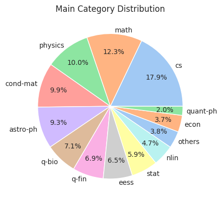
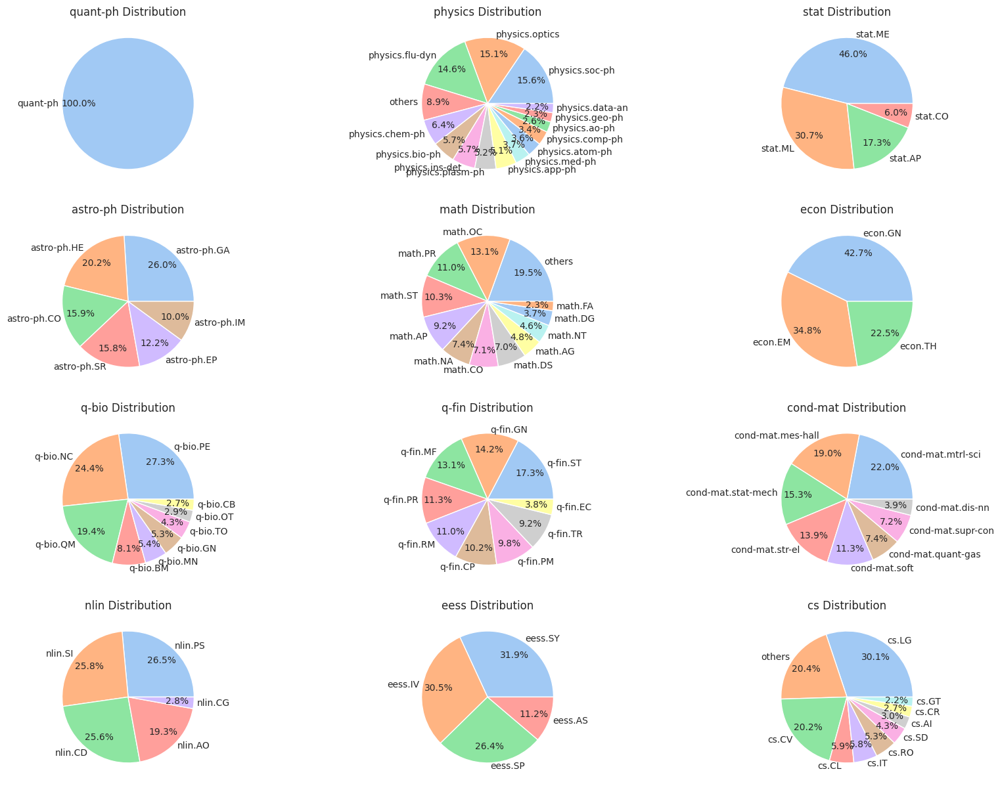
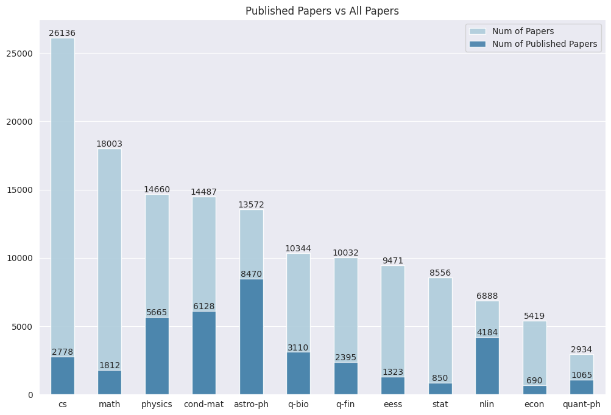
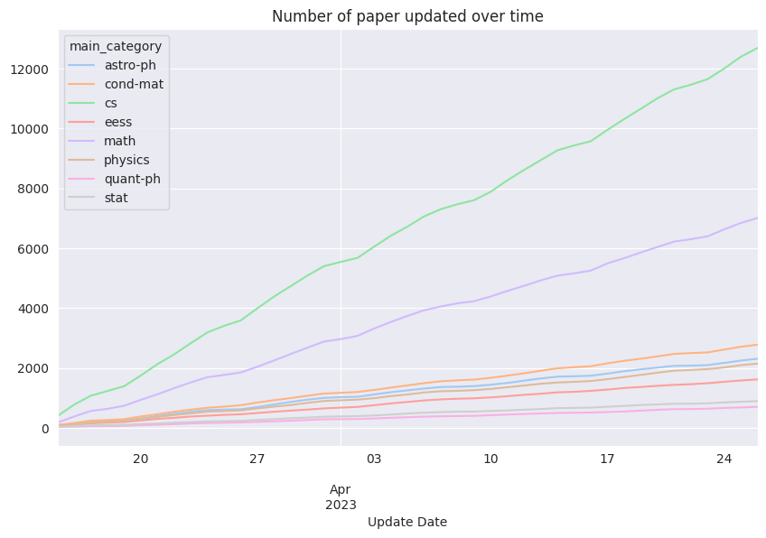

Code
import numpy as np
import pandas as pd
import os
import glob
import seaborn as sns
import seaborn.objects as so
import matplotlib.pyplot as pltMay 4, 2023
Pacakges used in this notebook:
Concatenate all the dataframes from different subjects into one dataframe.
Generally the data returned by arxiv api is pretty clean, we only need to perform some basic cleaning on merged dataset:
Further cleaning will be done in the specific tasks.
df = df.dropna(subset=['title', 'authors'])
df = df.sort_values(by='updated', ascending=False)
df = df.drop_duplicates(subset=['title', 'authors'])
len(df)146021doi_papers = df[df['doi'].notnull()]
doi_papers.to_csv("./doi_papers.csv", index=False)
doi_papers['main_category'].value_counts()main_category
astro-ph 8470
cond-mat 6128
physics 5665
nlin 4184
q-bio 3110
cs 2778
q-fin 2395
math 1812
eess 1323
quant-ph 1065
stat 850
math-ph 819
econ 690
hep-th 668
gr-qc 630
hep-ph 395
nucl-th 104
hep-ex 63
hep-lat 28
nucl-ex 23
chao-dyn 1
Name: count, dtype: int64
Our whole dataset is balanced, next look at the distribution of each subject in the dataset.
all_cats = all_counts.keys()
all_cats = set(all_cats) - set(['others'])
fig, axs = plt.subplots(4, 3, figsize=(20, 15))
for i, cat in enumerate(all_cats):
row = i // 3
col = i % 3
cat_df = df.query(f"main_category == '{cat}'")
cat_count = filter(cat_df['term'].value_counts(), 0.02)
axs[row, col].pie(cat_count.values(), labels=cat_count.keys(),
autopct='%1.1f%%', labeldistance=1.05, pctdistance=0.75,)
axs[row, col].set_title(f"{cat} Distribution")
plt.show()
published = {}
if all_counts.get('others'):
all_counts.pop('others')
for cat in all_counts:
cat_df = df.query(f"main_category == '{cat}'")
cat_published = cat_df['doi'].count()
published[cat] = cat_published
categories = list(published.keys())
paper_num = list(all_counts.values())
published_num = list(published.values())
pct_published = [p / n for p, n in zip(published_num, paper_num)]
sns.set_style('darkgrid') # Set the plot style
colors = sns.color_palette("Paired")
plt.figure(figsize=(12, 8))
plt.title('Published Papers vs All Papers')
ax = sns.barplot(x=categories, y=paper_num, alpha=0.9,
color=colors[0], errorbar="sd", width=0.5,
label='Num of Papers')
sns.barplot(x=categories, y=published_num,
alpha=0.8, color=colors[1], errorbar="sd", width=0.5,
label='Num of Published Papers')
for container in ax.containers:
ax.bar_label(container, fmt='%.0f', label_type='edge')
plt.legend()
plt.show()
Paper submitted/updated from March 2023 to April 2023
colors = sns.color_palette("Set2")
cut_off = '2023-3-15'
sub_df = df.query("main_category in @categories")
sub_df = df[df['updated'] > cut_off]
grouped = sub_df.groupby([pd.Grouper(key='updated', freq='D'),
'main_category']).count()
pivot = grouped['paper_id'].unstack().fillna(0)
pivot = pivot.cumsum()
# drop categories with less than 500 papers
num_papers = pivot.iloc[-1]
cols = num_papers[num_papers > 500].index
pivot = pivot[cols]
ax = pivot.plot(figsize=(10, 6))
ax.set_title('Number of paper updated over time')
ax.set_xlabel('Update Date')
plt.show()